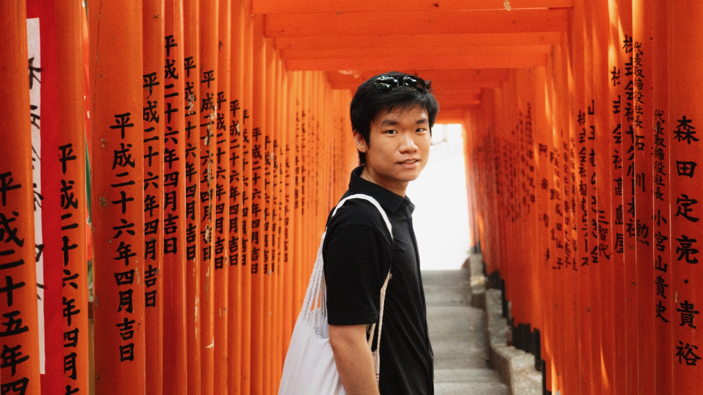

People Data Scientist | Machine Learning Engineer | Researcher
Hi, I'm
I build intelligent, production-grade systems that turn ambiguous data into deeply human, product-oriented solutions. Specializing in GenAI, ML pipelines, and causal inference.

About Me
I am a Data Scientist at American Airlines dedicated to bridging the gap between cutting-edge machine learning and deeply human experiences. My academic journey began with a unique triple-major B.S. in Data Science, Asian Studies, and Statistics, culminating in a Master of Science in Information (Data Science) from the University of Michigan.
Beyond my data pipelines, I am an active volunteer translating Buddhist texts to English, a polyglot (fluent in Malay, Mandarin, and English; conversational in Japanese, Hokkien, Hakka, and Cantonese), and a culinary enthusiast.
Technical Toolbox
Experience
American Airlines
People Data Scientist (Intern & Full-Time) | June 2024 – Present
- GenAI & Copilot Systems: Architected an LLM-powered travel agent integrating Databricks Genie MCP to analyze flight data and calculate standby clearance probabilities. Deployed a ticketing assistant using Microsoft Copilot Studio to automate analytics intake and enforce SLA compliance.
- Dashboard UX Redesign: Architected an automated travel analytics dashboard in Tableau, consolidating a year of manual reporting requests into a unified platform for executive route evaluation.
- Policy Impact: Analyzed travel trend data using a Mann-Whitney U test to compare pass utilization among interns, presenting insights to the Chief People Officer that directly resulted in an extended flight privilege policy.
- Data Engineering: Engineered a production ETL pipeline for point-in-time snapshots using SQL/Python, capturing accountability and travel data to enable time-aware model training.
- Workflow Automation: Orchestrated automated workflow pipelines using Alteryx, Python, and Power Automate, reducing manual reporting latency to save 10 hours weekly and approximately $23,400 annually.
University of Michigan Shared Services Center
Robotic Process Automation Intern | May 2022 – Aug 2023
- Workflow Automation: Developed software robots to automate complex business processes, resulting in the saving of more than 1,500 employee hours per annum and faster execution times.
- Data Integration: Connected software robots with ODBC drivers and ran SQL queries to seamlessly retrieve necessary data.
- Email Triage System: Developed a software robot to monitor 51 delegated email accounts and systematically log accounts requiring administrator attention.
Parcel Health
Software Engineering Intern | June 2021 – Aug 2021
- Web Application Development: Developed a web application to display risk estimation of specific diseases to help patients better adhere to their prescribed medications.
- Database Architecture: Spearheaded the design of an Entity-Relationship (ER) database focused on minimizing data redundancy while containing sufficient attributes to automatically update risk estimations for patients.
Featured Projects
Birdseye
Founder & ML Engineer
A full-stack NLP platform leveraging OCR, transformer-based image captioning, and GPT-based conversational retrieval to democratize access to Asian history artifacts. Achieved double-digit improvements in search precision through custom embeddings.
Visit Site Watch DemoMalaysian Political Dynamics Predictor
Machine Learning Pipeline
Predictive modeling framework built to analyze and visualize the 15th General Election data in Malaysia, utilizing advanced statistical classification models.
View Project View RepositoryEisenberg Family Depression Center App
MiNap Application
Collaborated on a software application designed to support sleep and mental health tracking for users, contributing to backend data structuring.
View RepositoryAcademic Research
University of Michigan
Data Scientist & Research Assistant | Sept 2019 – Present
- Causal Inference: Performed causal-impact analysis using counterfactual modeling to measure the effectiveness of COVID-19 policies on physical activity across a European cohort.
- Behavioral Modeling: Applied Random Forest and Bayesian hierarchical models to a multi-semester dataset of 5,000 students, identifying behavioral predictors of effective collaboration with >75% accuracy.
- Clustering Pipelines: Spearheaded a K-means clustering pipeline to group students by personality and work-style traits, replacing faculty intuition with reproducible algorithmic team assignments.
- Longitudinal Analysis: Modeled health-survey data using dynamic time warping to identify patterns in diet and hygiene for interventions in India.
Selected Publications
- IEEE CoG 2024: Examining Gameplay Patterns and their Association with Nutritional Knowledge.
- CHITA 2024 [HEALTH IT in ACTION Award]: Effect of AI-enabled School-Based Mobile Health Game Play on Health Knowledge.
- ASEE 2023: Predicting Team Function Using Bayesian and Cognitive Diagnostic Modeling Approaches.
Community & Volunteer Work
Buddhist Text Translation
I actively volunteer to translate ancient Buddhist texts into English. My goal is to break down linguistic barriers, helping English speakers explore and learn more about Buddhism in an accessible, nuanced way.
"Local Business Going Online" Initiative
During the COVID-19 pandemic, I led a voluntary program to help local small businesses transition to e-commerce. I built free websites and offered technical support to ensure their survival and growth in the digital landscape.
Let's Connect
I am always looking for the next fascinating intersection between data science, education, and human connection. Feel free to reach out!